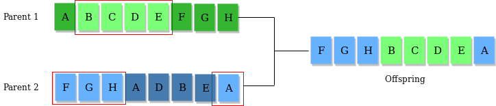

Въведение
Генетични алгоритми – адаптивни методи на търсене, които се използват за решаване на оптимизационни задачи. Понятието за генетични алгоритми съществува отдавна, обаче своята популарност набират през последните десетилетия. Те се базират на генетическите процеси на биологически организми : биологичните популации се развиват в продължение на няколко поколения, подчинявайки се на законите на естествения подбор и на принципа „оцеляване на най-приспособените“, открит от Чарлз Дарвин. Като имитират този процес, генетичните алгоритми са в състояние да „разработват“ решения на реални проблеми, ако са подходящо кодирани.
В историята на появата на генетичните алгоритми можем да разграничим два етапа: фаза на разработване на елементите на генетичните алгоритми (края на 50-те години - началото на 70-те години на ХХ век) и фаза на създаване на първоначалната форма на на генетичните алгоритми (70-те години на ХХ век). Първите публикации, свързани с разработването на елементи на генетични алгоритми, принадлежат на Н.А. Баричели. Неговите трудове са насочени към разбиране на природното явление наследственост. Австралийският генетик А. Фрейзър публикува поредица от трудове, посветени на симулирането на изкуствен подбор сред организми с многократно управление на измерими характеристики. Симулациите на Фрейзър включвали всички съществени елементи на съвременните генетични алгоритми. Неговата работа наподобява оптимизация на функции и има много общо със съвременния генетичен алгоритъм, но в работата на Фрейзър не се споменава възможността за използване на генетични алгоритми за изкуствени проблеми. Въпреки че в статията си от 1963 г. Баричели симулира способността на машина да играе проста игра, изкуствената еволюция се превръща в утвърден метод за оптимизация след работата на И. Реченберг и Х.-П. Швефел през 60-те и началото на 70-те години на ХХ век. Групата на Рехенсберг успява да реши сложни инженерни проблеми в съответствие със стратегиите на еволюцията. Друг подход е техниката на еволюционното програмиране на Л. Ж. Фогел, която е предложена за създаване на изкуствен интелект. Генетичният алгоритъм, който сега обикновено се нарича класически алгоритъм, е описан и изучен подробно за първи път в работата на де Джонг. За родоначалник на съвременната теория на генетичните алгоритми се смята Д.Х.Холанд. Заслугата на Холанд е, че той осъзнава значението на еволюционните принципи в адаптацията и развива своите предположения. Холанд е бил сигурен, че е възможно да се състави и приложи под формата на компютърна програма алгоритъм, който да решава сложни проблеми по начина, по който го прави природата - чрез еволюция.[1]
Основни понятия и механизми
Генетични алгоритми симулират процес на естествен отбор, което означава, че видовете, които се адаптират към изменения в околната среда могат да оцелеят, да се възпроизведат и да преминат в следващото поколение. С прости думи, те симулират „оцеляване на най-приспособимите“ сред индивиди от последователни поколения, за да решат даден проблем. Всяко поколение се състои от популация от индивиди и всеки индивид представлява точка в пространството за търсене и възможно решение. Всеки индивид се представя като низ от символи/integer/ float/битове. Този низ е аналогичен на хромозомата.
- Пространство за търсене
Популацията от индивиди се поддържа в пространството за търсене. Всеки индивид представлява решение в пространството за търсене за даден проблем. Всеки индивид е кодиран като вектор с крайна дължина (аналогичен на хромозома) от компоненти. Тези променливи компоненти са аналогични на гените. Така една хромозома (индивид) се състои от няколко гена (променливи компоненти).

- Оценяваща функция (Fitness function)
На всеки индивид се дава оценка за физическа годност, която показва способността на индивида да се „състезава“. Търси се индивидът, който има оптимална оценка за физическа годност (или близка до оптималната). Индивидите с по-добри фитнес точки получават по-голям шанс да се възпроизвеждат от останалите. По този начин всяко ново поколение има по-добри „частични решения“ от предишните поколения.[2]
Процесът на генетичните алгоритми може да бъде обобщен в следните стъпки:
- Инициализация: Първоначална популация от индивиди се генерира на случаен принцип или с помощта на специфична евристика. Всеки индивид има набор от гени, които представляват потенциално решение.
- Оценка: Всеки индивид се оценява с помощта на фитнес функция.
- Избор: Най-здравите индивиди са по-склонни да бъдат избрани да се възпроизвеждат и да предадат своите гени на следващото поколение. Това се постига чрез техники като рулетка за избор или турнир за избор.
- Репродукция:Избрани индивиди се кръстосват един с друг, за да се получи потомство. Този процес се основава на генетични оператори.
- Мутация:С малка вероятност се въвеждат произволни промени в гените на потомството, за да се поддържа генетичното разнообразие и да се предотврати преждевременната конвергенция.
- Замяна: Потомството замества някои индивиди от предишното поколение, създавайки ново поколение индивиди.
- Повторение: Стъпки 2-6 се повтарят, докато не бъде изпълнен критерий за прекратяване, като например достигане на максимален брой поколения или постигане на приемливо решение.[3]
- Генетични оператори
- Селекцията (Selection) е процес на избор на индивиди от текущата популация за създаване на потомство.Това се извършва въз основа на тяхната годност(fitness function) – индивидите с по-високи стойности на годност (по-добри решения) е по-вероятно да бъдат избрани.
- Кръстосването (Crossover, наричано още рекомбинация) комбинира генетичната
информация на два родителски индивида, за да създаде ново решение (потомство).

- Мутацията(Mutation) въвежда малки случайни промени в генетичния състав на
индивида, за да се поддържа разнообразието в популацията и да се избегне преждевременна
конвергенция, към неоптимални решения, е вдъхновен от генетичните мутации в природата, където
случайните промени в ДНК могат да доведат до нови характеристики.

- Видове на генетични оператори
- Селекция (Selection):
- Селекция с рулетка (Roulette Wheel Selection): Вероятността за избор е пропорционална на годността.
- Селекция в турнир (Tournament Selection): Избира се група от индивиди на случаен принцип и се избира най-добрият от тях.
- Селекция по ранк(Rank Selection): Индивидите се класират и изборът се основава на ранга, а не на стойността на фитнес.
- Кръстосване (Crossover):
- Кръстосване в една точка (Single-point crossover): В тази точка двамата родители обменят генетичен материал.
- Кръстосване в две точки (Two-point crossover): Избират се две точки и се разменя генетичен материал между тези точки.
- Равномерно кръстосване (Uniform crossover):Всеки ген се избира на случаен принцип от всеки от родителите.
- Мутация (Mutation):
- Мутация с обръщане на битове (Bit-flip mutation):Обръщане на стойността на бит в двоично представяне.
- Мутация с размяна (Swap mutation): Размяна на стойностите на два гена.
- Гаусова мутация (Gaussian mutation):Добавяне на малка случайна стойност към даден ген.
- Селекция (Selection):
Приложения на генетичните алгоритми
Генетичните алгоритми намират приложения в широк спектър от области.
- Оптимизация
Оптимизирането на сложни системи е една от областите, в които генетичните алгоритми са доказали своята ефективност. Тези системи може да имат множество променливи, ограничения и противоречиви цели. Генетичните алгоритми могат да намерят оптимални или почти оптимални решения на този тип проблеми.
Пример за такъв тип задачи е Оптимизиране на транспортни маршрути: компания, която трябва да намери най-добрия маршрут за доставка на стоки до множество дестинации. Генетичните алгоритми могат да генерират популация от възможни маршрути и да оценят тяхната ефективност, като използват мерки като общо изминато разстояние и време за доставка. Чрез селекция, възпроизвеждане и мутация, генетичните алгоритми могат да намерят решения, които оптимизират наличните ресурси и минимизират оперативните разходи. - Машинно обучение
Машинното обучение е друга област, в която генетичните алгоритми се използват за подобряване на съществуващи модели и алгоритми. Тези алгоритми могат да оптимизират параметрите на моделите за машинно обучение, за да подобрят тяхната производителност и точност.
Пример: Оптимизация на невронни мрежи: Невронните мрежи са ключов компонент на дълбокото обучение и машинното обучение като цяло. Въпреки това, намирането на оптимални стойности за многобройните параметри на невронната мрежа може да бъде предизвикателство.
Генетичните алгоритми могат да коригират теглата и структурите на невронната мрежа чрез селекция, възпроизвеждане и мутация. Чрез ефективно изследване на пространството за търсене генетичните алгоритми могат да намерят оптимални конфигурации за подобряване на производителността на невронните мрежи и постигане на по-висока точност при задачи като класификация на изображения или обработка на естествен език. - Проектиране на електронни схеми
Дизайнът на електронни схеми е друга област, в която генетичните алгоритми са се оказали полезни.
Тези алгоритми могат да генерират ефективни, оптимизирани дизайни за сложни схеми, минимизирайки броя на използваните компоненти и максимизирайки производителността.
Пример: Дизайн на цифрова схема: Нека си представим, че една цифрова схема трябва да бъде проектирана да изпълнява специфична задача, като например добавяне на двоични числа. Генетичните алгоритми могат да генерират популация от възможни дизайни на вериги, където всеки индивид представлява уникална конфигурация от логически порти и връзки. Чрез оценка на годността генетичните алгоритми могат да идентифицират проекти, които отговарят на изискванията за производителност и ефективност. Чрез селекция, размножаване и мутация могат да бъдат намерени оптимални решения, които минимизират консумацията на енергия, намаляват размера на веригата и увеличават максимално работната скорост.
Освен това генетичните алгоритми се използват в проектирането на конструкции и архитектура и други области. [3]
Предимства и недостатъци
Целта на генетичния алгоритъм е да намери най-доброто решение на даден проблем, а не оптималното решение. В този случай проблемът за постигане на оптималното решение е второстепенен. Другите методи, ориентирани към намиране на оптимално решение, са изключително сложни.
Предимства:
- В процеса на работа генетичните алгоритми не използват никаква допълнителна информация, освен данните за областта на допустимите стойности на параметрите и целевата функция в произволна точка, което увеличава скоростта на работата им.
- Генетичните алгоритми използват едновременно и вероятностни, и детерминирани правила за генериране на нови точки от пространството на търсене, което дава много по-голям ефект от всеки от тези методи поотделно.
Недостатъците на генетичните алгоритми включват следното:
- Не е гарантирано, че ще се получи оптимално решение;
- Само специалист може ефективно да формулира проблема, да определи критерия за избор на хромозоми (да зададе кода) и други параметри на генетичните алгоритми. [5]
Заключение
Генетичните алгоритми са мощен инструмент за ефективно решаване на сложни задачи. Вдъхновени от принципите на генетиката и биологичната еволюция, тези алгоритми използват техники за селекция, възпроизвеждане и мутация, за да търсят оптимални решения в големи пространства за търсене.
Концепцията за генетичните алгоритми се прилага в различни области, от оптимизация до проектиране и архитектура на електронни схеми. Тези приложения демонстрират гъвкавостта и потенциала на генетичните алгоритми за справяне с проблеми от реалния свят.
Използвана литература
- Степанов Кирилл Александрович; ИСТОРИЯ ВОЗНИКНОВЕНИЯ ГЕНЕТИЧЕСКИХ АЛГОРИТМОВ// ЭЛЕКТРОННЫЙ НАУЧНЫЙ ЖУРНАЛ «APRIORI. CЕРИЯ: ЕСТЕСТВЕННЫЕ И ТЕХНИЧЕСКИЕ НАУКИ»
- GeeksForGeeks: Genetic Algorithms
- TecnoDigital: Генетични алгоритми: концепция и приложения
- Brolly Academy; Genetic operators in Machine Learning
- Файловый архив студентов,Поволжский государственный технологический университет: Достоинства и недостатки генетических алгоритмов